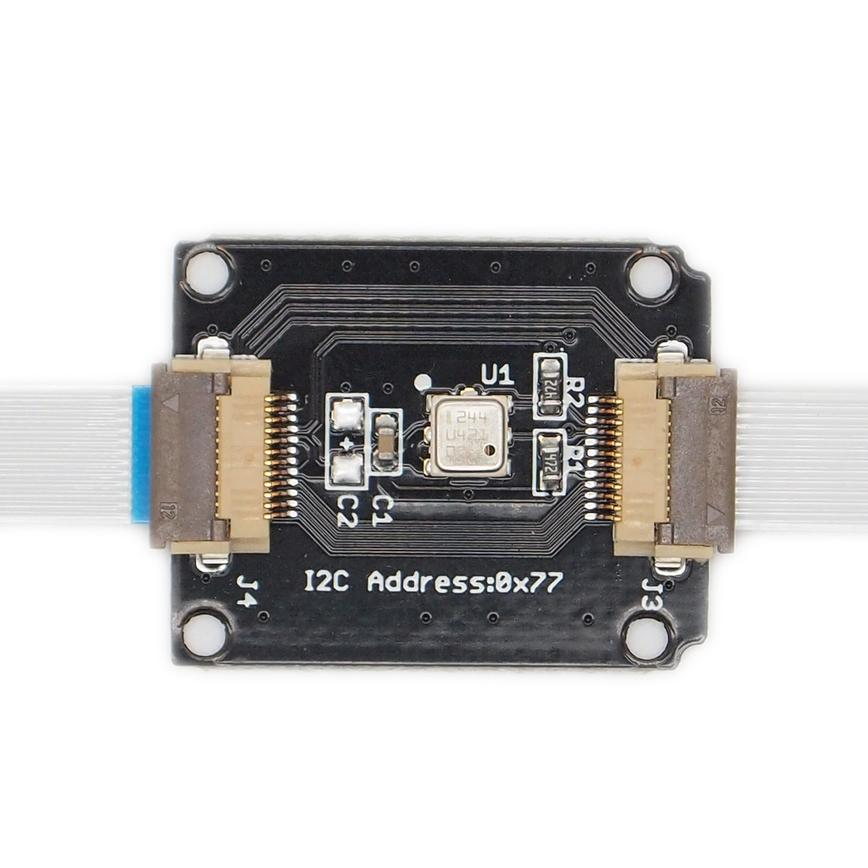
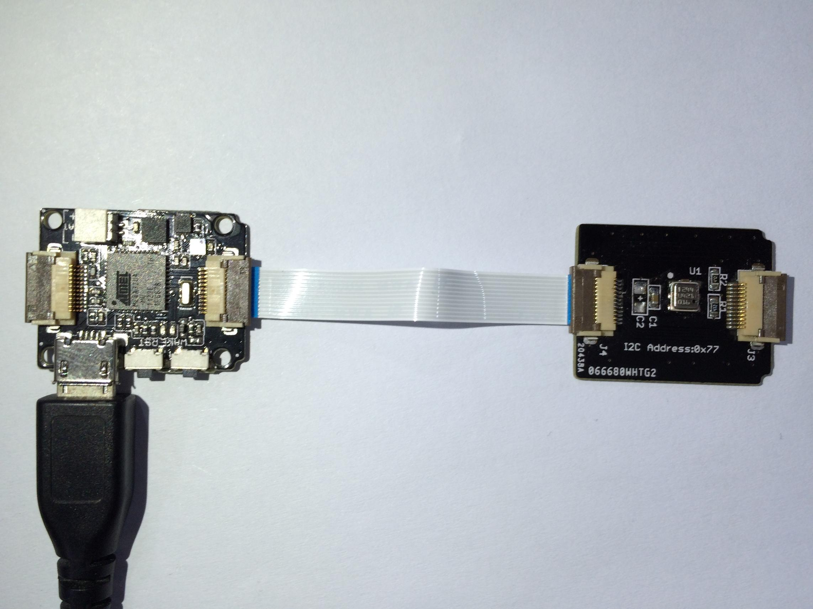

The module can measure the air pressure and temperature of the current environment, and then you can convert this signal to information of altitude. The BMP180 is the function compatible successor of the BMP085, a new generation of high precision digital pressure sensors for consumer applications. The ultra-low power, low voltage electronics, superior performance of the BMP180 is optimized for use in wearable device, mobile phones, PDAs, GPS navigation devices and outdoor equipment. The I2C interface allows for easy system integration with a microcontroller.

The demo will show you how to get the air pressure and temperature of the current environment.

Note: When connecting Xadow - Barometer BMP180 to Xadow - Main Board, you should concern about the connection direction. The connection method is that the unfilled corner of one Xadow module need to connect to the right angle of another module(see four corners of each Xadow module).
/*
* Get pressure, altitude, and temperature from the BMP180.
* Serial.print it out at 9600 baud to serial monitor.
*/
#include "Barometer.h"
#include "Wire.h";
float temperature;
float pressure;
float atm;
float altitude;
Barometer myBarometer;
void setup(){
Serial.begin(9600);
myBarometer.init();
}
void loop()
{
temperature = myBarometer.bmp085GetTemperature(myBarometer.bmp085ReadUT()); //Get the temperature, bmp085ReadUT MUST be called first
pressure = myBarometer.bmp085GetPressure(myBarometer.bmp085ReadUP());//Get the temperature
altitude = myBarometer.calcAltitude(pressure); //Uncompensated calculation - in Meters
atm = pressure / 101325;
Serial.print("Temperature: ");
Serial.print(temperature, 2); //display 2 decimal places
Serial.println("deg C");
Serial.print("Pressure: ");
Serial.print(pressure, 0); // whole numbers only.
Serial.println(" Pa");
Serial.print("Ralated Atmosphere: ");
Serial.println(atm, 4); //display 4 decimal places
Serial.print("Altitude: ");
Serial.print(altitude, 2); //display 2 decimal places
Serial.println(" m");
Serial.println();
delay(1000); //wait a second and get values again.
}